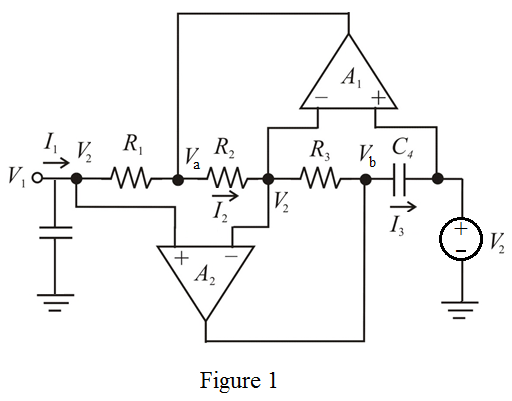

Step 1:
Refer to Figure 16.20(a) in the textbook for the Antoniou Inductance-simulation circuit.
Redraw the circuit by eliminating resistor  , connecting capacitor
, connecting capacitor  between the node 1 and ground and connecting voltage source
between the node 1 and ground and connecting voltage source  at node 2 as shown in Figure 1.
at node 2 as shown in Figure 1.

Step 2:
Because of the virtual short at the input terminals of the operational amplifier, all nodes are at voltage  .
.
The current  is,
is,
Since no current enters into the operational amplifier input terminals, the voltage is,
Substitute for  in the equation.
in the equation.
Step 3:
From the circuit, the current through the resistor  is,
is,
From the circuit, the voltage at the node b is,
From the circuit, the current is,

Step 4:
The input impedance seen by the voltage source  is,
is,
Thus the input impedance seen by the voltage  is, .
is, .
Substitute  for
for  in the equation.
in the equation.
Thus, the impedance behaves as a frequency-dependent pure negative resistance.